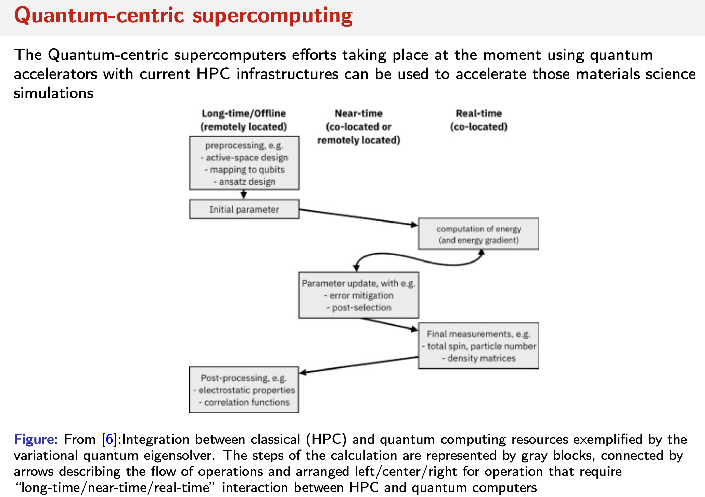
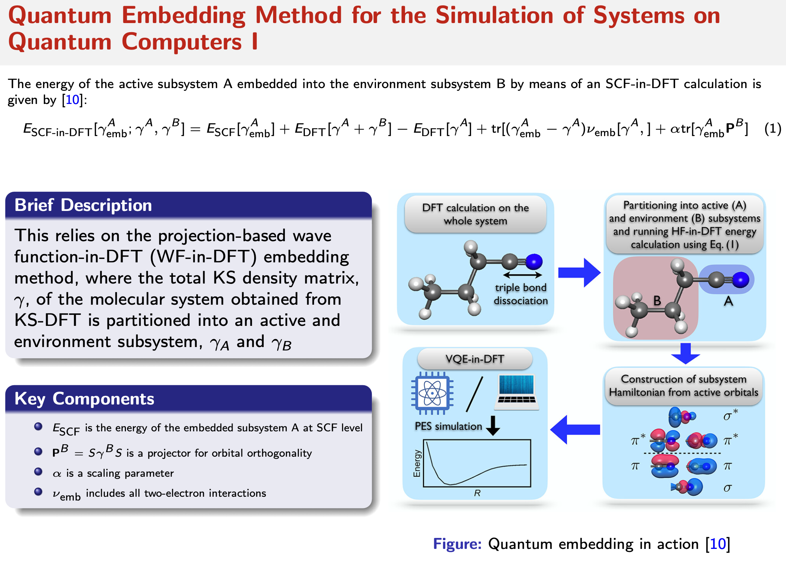
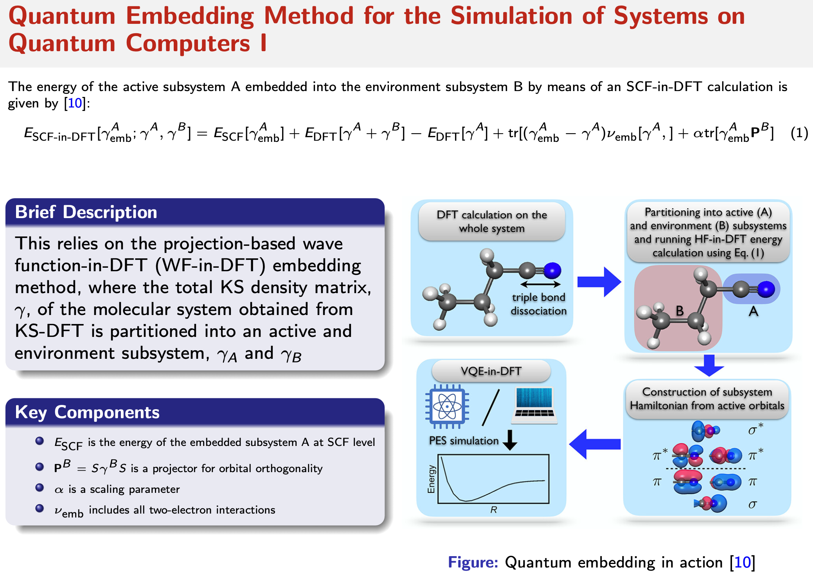

Quantum Computing for Materials Science
Note: This tutorial is based on research work available on arXiv:2412.00951. Related codes and input files can be found in the 2024_inhibitQ repository.
The slides for the talk related to this tutorial can be found here (right-click and select “Open in new tab” to view in browser).
The demo files for this tutorial are described and detailed throughout the text here in this page and the associated pages. It should also appear in your LUMI notebooks, otherwise, you can download them from mat_sc_on_qc
Contents
Introduction
Quantum chemistry calculations are among the most promising early applications of quantum computers. However, materials science simulations, particularly those involving solid-state systems, have not been well covered in the literature. Such calculations are usually associated with periodic system descriptions and can involve a large number of atoms, often in the hundreds. This repository aims to provide a comprehensive guide on how to perform these calculations using quantum computers in a way that aligns with current efforts to introduce quantum-centric supercomputers, where the quantum computer is considered an accelerator for classical calculations, similar to the role of GPUs in various fields. The tutorial here is focusing on simulating the calculation on a quantum computer, some hinders weren’t solved when it comes to running the calculation on quantum computer at the time of writing this tutorial.
Why Quantum Computing for Materials?
The simulation of large solid-state systems typically involves a significant number of atoms, which necessitates approximations in calculating the ground state energy. Methods like Density Functional Theory (DFT) are useful in this context. However, there are important parts of the system that can be described more accurately, especially when they involve interactions of particular interest to scientists. Quantum computing algorithms could be advantageous in focusing on such subsystems of the supercell and communicating the results to the DFT code. In simpler terms, they can correct the energy by accounting for more detailed information from these specific subsystems. This approach is known as quantum embedding[1]. Of course, this is a very simplified description and can be considered analogous to the QM/MM method; again, this is just a simplification of the problem description and not an entirely accurate illustration.
It is a hot topic now given the quantum centeric supercomputers effort and the rise of hybrid quantum classical approaches. More recent literature to study can be found in those references[2] [3] [4] [5].
Prerequisites
To follow this tutorial, you should have a basic understanding of quantum computing and materials science or quantum chemistry, like simulating the H2 molecule or LiH tutorials by qiskit for example. Familiarity with quantum chemistry calculations and Density Functional Theory (DFT) will be helpful.
Hands-on Example
1. Classical Calculations
For detailed information about the classical calculations, including supercell generation, geometry optimization, supercell calculations, and binding energy calculation, please see Classical Calculations.
The supercell used in this tutorial is a 4x4x1 Al(111) substrate with a 1,2,4-triazole molecule on top of the Al(111) surface.

2. Hybrid Quantum Classical Calculation
This section demonstrates the integration of classical DFT calculations with quantum computing methods through an active space embedding scheme. The implementation combines CP2K for classical DFT calculations with Qiskit for quantum computations, using an active space of 2 electrons in 5 orbitals.
Key components include:
Classical DFT calculations using CP2K
Quantum calculations with Active space embedding using ADAPT-VQE algorithm
Socket-based integration between classical and quantum components
For detailed implementation information, including configuration parameters and workflow structure, see Hybrid Quantum Classical Calculations.
3. Calculations Results
After performing the hybrid quantum-classical calculations, we analyze the binding energy to understand the interaction strength between the surface and the adsorbate. The binding energy is calculated as:
E_binding = E_supercell - (E_substrate + E_inhibitor)
Binding Energy Comparison
Method |
Inhibitor |
Binding Energy (eV) |
Binding Distance (Å) |
|---|---|---|---|
Classical DFT |
1,2,4-Triazole |
-0.385512 |
3.54 |
AdaptVQE |
1,2,4-Triazole |
-0.385508 |
3.54 |
Vanilla VQE |
1,2,4-Triazole |
-2.325986 |
3.54 |
Discussion and Future Work
The results of this simulations show an agreement between classical DFT and AdaptVQE method. The AdaptVQE implementation proved more robust with its gradient-based operator pool selection compared to the vanilla VQE, which showed significant deviation with notably higher binding energy.
Outlook and Discussion
The calculation employed an active space of 2 electrons in 5 orbitals (10 spin-orbitals) around the Fermi level. For more accurate results, expanding the active space to include more orbitals could lead to different binding energies compared to the classical approach, particularly in better capturing the complex hybridization between molecular orbitals and substrate states. At the time of writting this tutorial, only the assigned number of orbitals and electrons managed the calculation to converge.
Conclusion and Future Work
This work successfully demonstrating a workflow for hybrid quantum-classical calculations for materials science, suitable for running on quantum centric supercomputers like Lumi. A lot of work is still needed to make this method practical for large systems and to improve the convergence of the calculation when using the AdaptVQE algorithm and including more orbitals in the active space, which will make the calculation worth it on quantum computers. Ofcourse, error mitigation techniques will be needed to make this method practical, but that is another story.
Snippets from the slides
I believe those snippets augment the text and provide a better understanding of the work. Ofcourse, the full slides are available here (right-click and select “Open in new tab” to view in browser).`
Here comes the snippets from the slides:

 
